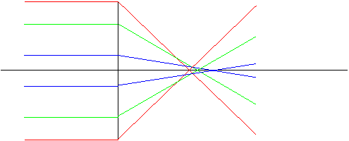
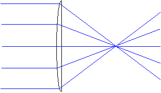
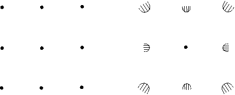

Kap 2 Begränsningar i optiska system
Handlar om sådant som begränsar bildkvalitet i optiska system, hur man kan komma till rätta med sådana problem och slutligen hur man kan kvantifiera dem.
Aberrationer
Ordet betyder avvikelse och anger att världen inte består av små vinklar. Allt vi gjort hittills bygger egentligen på att vinklarna (mot symmetriaxeln) är små. (Att sinus för vinkeln är lika med vinkeln) Att det blir lite annorlunda i verkligheten yttrar sig i det som kallas för aberrationer och som yttrar sig i att med enkla, billiga linser blir resultatet inte lika bra som med ett mer sammansatt system. Det finns faktiskt en orsak till att kameraobjektiv exempelvis ofta är lika tjocka som sin fokallängd.
Det finns 6 typer av aberration som vi beskriver i nivå 2 nedan.
Här nöjer vi oss med att konstatera att symptomen på för dålig/billig optik är:
Suddig bild jämnt över (orsak: sfärisk aberration)
Suddig bild i kanterna (orsak: coma och astigmatism)
Suddiga partier i bilden (bildfältskrökning)
Formförändrad bild (distorsion)
Svartvita kanter får regnbågseffekter (kromatisk aberration)
För att få kameramässig kontroll över alla dessa brukar ett kameraobjektiv exempelvis vara sammansatt av minst fem och oftast sju linser.
Till
nästa sida (Diffraktion)Till
nästa kapitel (Laser och laserteknik)Till
innehållsförteckningenAberrationer (nivå 2)
betyder att en lins har olika fokallängder för olika våglängder eftersom brytningsindex är olika. Fenomenet kallas dispersion och innebär för att n varierar med mellan 1% och 3% över det synliga spektrum. Detta innebär att fokalländen varierar mellan 3% (låg dispersion) och 12%(hög dispersion) i samma spektrum. Varför?Vad skulle detta innebära om man inte gjorde något åt det?
Tag som exempel en
kikare med 200mm fokallängd för grönt ljus (mittvåglängd i synliga spektrum) hos objektivet och 20mm hos okularet (10ggr förstoring). För rött ljus blir då fokallängderna längre, välj som exempel 4%, dvs 208mm resp 20.8mm.Vi ställer nu in kikaren så att den ger en skarp bild för grönt ljus, avståndet mellan linserna är då 220mm (eller hur?). Den gröna slutbilden hamnar nu i oändligheten dvs vi ser den skarpt med våra ögon utan att anstränga dem.
Det röda ljuset ger nu en mellanbild 208mm från den objektivet dvs 12mm från okularet.
Detta ger med linsformeln en röd slutbild på avst -28.3mm, dvs 28mm framför ögat. Där ser man ingenting skarpt, i synnerhet inte med ögon inställda på oänligt avstånd. Ställ in ögonen på fjärrseende, dvs titta ut genom fönstret, och håll en pennspets 28mm framför ögat. Syns pennspetsen?
I kikaren skulle detta innebära att en vit stjärna syntes som grön i mitten och med en röd skimrande aura runt. Vackert, men inte så ändamålsenligt (och då har vi inte undersökt vad som hänt med det blå ljuset)
Det finns emellertid ett sätt att kringå problemet:
Man gör en sammansatt lins av en positiv lins med kort fokallängd (säg 100mm dvs
styrka 10D) och en negativ med längre fokallängd (-200mm ger styrka -5D). Placeras dessa tätt intill varandra blir den sammanlagda styrkan +5D (man kan lägga ihop styrkor rakt upp och ner). Detta gäller mittvåglängden.Om vi nu valt ett glas med hög dispersion (4% från grönt till rött) till den negativa och ett med låg dispersion (2% från grönt till rött) till den positiva, blir styrkorna 10.2D för den positiva i rött och -5.2 för den negativa.
Den sammanlagda styrkan blir då 5D även för rött! Linser av denna typ kallas ofta akromater och består av två limmade linser intill varandra, som i fig. Detta är standard i exvis kikare.
Här kommer emellertid verkligheten och ställer till med lite problem:
De bägge glassorterna har ofta lite olika temperaturutvidgningskoefficient, vilket innebär att om en akromat kyls ner eller värms upp kraftigt bryts limningen sönder. Detta kan i allmännhet inte repareras till rimliga kostnader varför linsen måste bytas om det hänt. Temperatur-intervall är därför en viktig kravspec på optik.
Sfärisk Aberration betyder att linsens
centrala delar och dess perifera delar har olika fokallängd och yttrar sig praktiskt som att man inte kan får en skarp bild någonstans. Strålar som egentligen ska gå mot fokus bryts i stället på ett kortare avstånd. Hela bilden blir alltså suddig .OBS att det inte finns något samband mellan var i linsen en stråle går och var på bilden den hamnar
Åtgärder:

Coma är ett avbildningsfel som bara gäller strålar som kommer in snett i linsen, dvs som ligger långt ut i synfältet. Effekten man har olika förstoring för centrala och för perifera strålar och att detta blir värre ju snedare inafll mot linsen man har, dvs ju längre ut i synfältet objektet ligger. Strålarna går som i fig härintill och vi ser att centrala strålar ger en liten och skarp bild, medan strålar halvvägs ut i linsen ger större suddighet, men ligger förskjutna utåt. Denna effekt blir värst för de mest perifera strålarna
Resultatet blir som i den lilla fläcken överst i fig. Längst in (där alla strålar överlappar) blir det ljusstarkast. Ju längre ut (ner i fig) man kommer dest färre strålar och ju ljussvagare.
Ett objekt med 3 x 3 punkter kommer i detta fall att avbildas så här:

Det kometsvansliknande utseendet har givit aberrationen dess namn.
Problemet åtgärdas delvis med akromater och mera fullständigt med menisklinser, dvs positiva linser av samma form som en nymåneskära.
I verkligheten stöter man ofta på coma som syns i hela bilden, men värre neråt ett hörn. Detta dyker ofta upp efter det att man rengjort instrumentet. Vad
har hänt ?Astigmatism
som avbildningsfel ska bara beröras helt kort, men är ett tredimensionellt fenomen som gör att radiella och tangentiella linjer avbildas skarpt på olika avstånd från linsen. Avbildar man ett cykelhjul kommer vid en skärpeinställning ekrarna att synas tydligt och vid en annan fälgen. I enkla linssystem drunkar astigmatismen ofta helt i sfärisk aberration och coma, men i korrigerade (=litet dyrare) är det ofta det enda som finns kvar.Botemedlet ligger i flerlinsiga system
Distorsion är ett avbildningsfel som inte yttar sig som suddighet utan som att informationen förvrängs så att räta linjer i ett objekt inte längre blir räta i bilden.
Eftersom man kan räkna ut distorsionen för ett givet system kan man alltid kompensera för den om bilden ska databehandlas, vilket ju är bra. Informationen har alltså inte gått till spillo som vid suddighet av olika typer utan kan räknas fram. Det gör att man ofta accepterar lite distorsion om man på så sätt bättre kan åtgärda de andra aberrationerna.
Det finns vidare ett mycket vanligt linssystem där man har (och accepterar) en gigantisk distorsion. Vilket? Jo�.
Till
nästa sida (Diffraktion)Till
nästa kapitel (Laser och laserteknik)Till
innehållsförteckningen